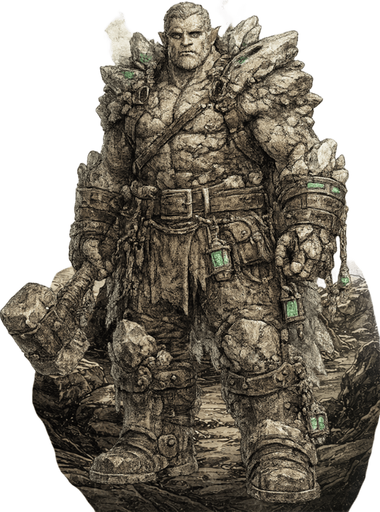
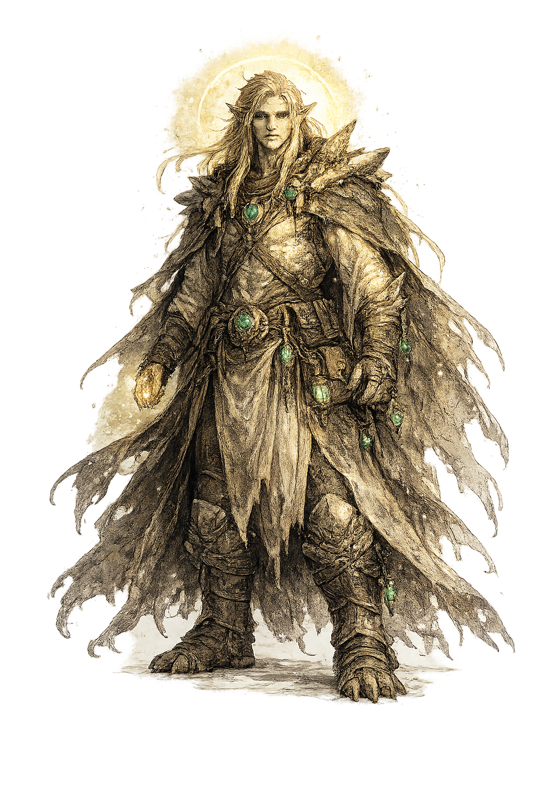
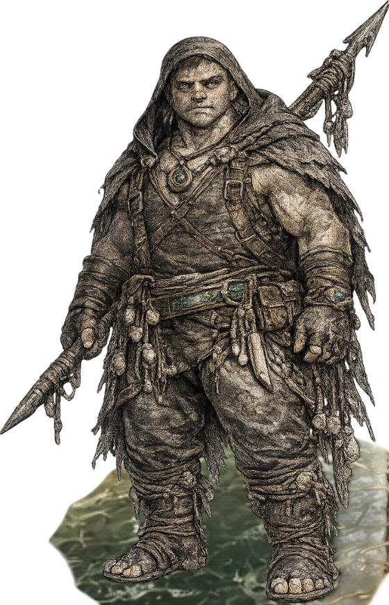
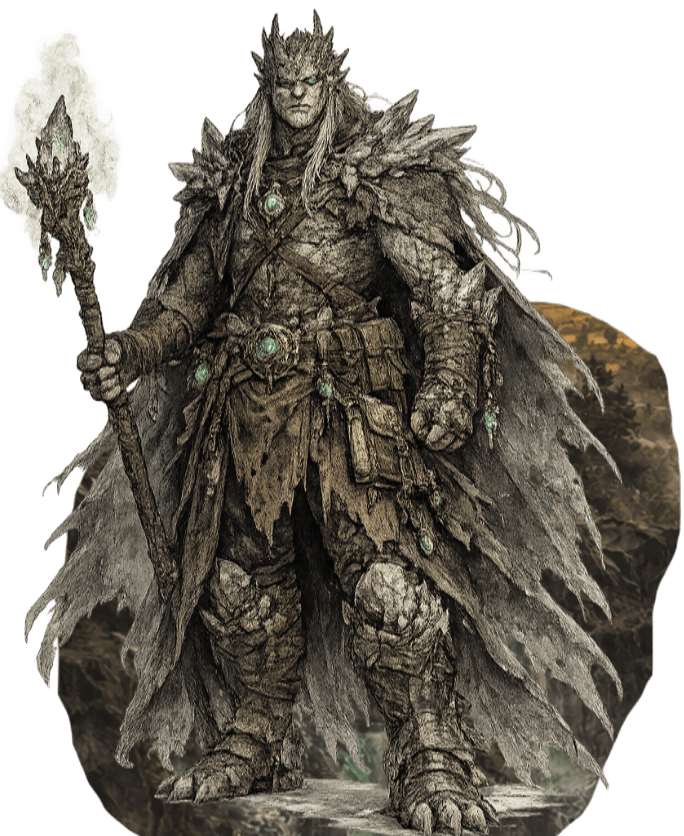
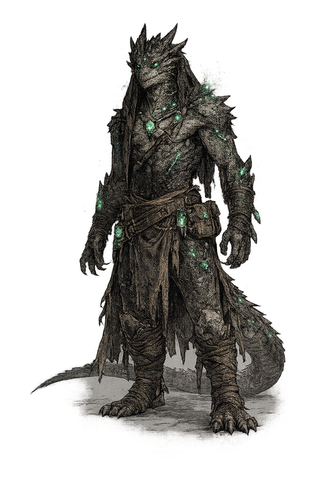
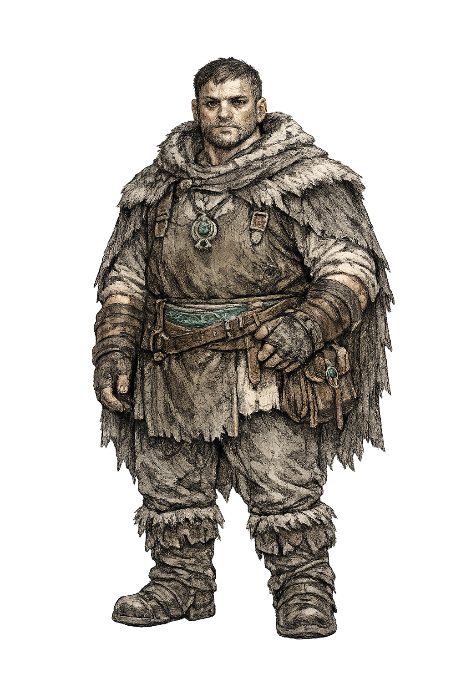

Bem-vindo a Varkhul
Varkhul é um mundo antigo fingindo ser estável.
Seus reinos ainda erguem bandeiras, seus templos ainda fazem soar seus sinos, seus estudiosos ainda debatem linhagem, lei, herança e precedente divino, mas, sob toda essa cerimônia, jaz uma civilização construída sobre fraturas soterradas. Os deuses outrora moldaram o mundo diretamente, ou ao menos é isso que afirmam as histórias oficiais. Eles concederam nomes, leis, linhagens, deveres e fronteiras sagradas aos povos mortais. Então, em algum ponto profundo da história, suas vozes tornaram-se distantes. Alguns dizem que se retiraram porque os mortais enfim haviam amadurecido. Outros dizem que foram feridos. Outros sussurram que o silêncio do divino não foi misericórdia, nem mistério, mas contenção.
Em Varkhul, o poder raramente se anuncia com uma espada desembainhada. Ele aparece na redação de um tratado, em um contrato matrimonial entre casas que se odeiam há séculos, em um decreto templário que reclassifica uma linhagem como abençoada ou contaminada, em uma carta mercantil que silenciosamente redireciona grãos, armas ou remédios de uma província para outra. Famílias nobres, antigas igrejas, guildas cívicas, colégios arcanos, ordens militares, arquivos ocultos, emissários estrangeiros e linhagens esquecidas disputam influência. Alguns desejam reforma. Alguns desejam restauração. Alguns desejam a verdade. Alguns desejam enterrá-la tão profundamente que nem mesmo os mortos possam trazê-la de volta ao mundo.
O próprio mundo se lembra de coisas demais. Santuários em ruínas ainda carregam a pressão de ritos antigos. Passagens montanhosas são vigiadas por povos cujas histórias orais contradizem o registro oficial. Estradas antigas ligam cidades que já não admitem terem sido aliadas. Regiões inteiras vivem sob suspeita herdada por causa de eventos ocorridos há milhares de anos, eventos preservados de modo diferente por cada cultura que sobreviveu a eles. Um sacerdote pode chamar algo de milagre, um estudioso pode chamar de Ressonância, um nobre pode chamar de alavanca, e um ancião de aldeia pode chamar de a mesma velha maldição vestindo um rosto novo.
Os povos de Varkhul não são simplesmente “raças” no sentido comum; são histórias políticas tornadas carne. Os Varsosters, difundidos e adaptáveis, costumam ocupar o centro da agricultura, da autoridade e da vida cívica, mas tal proeminência lhes traz tanto ressentimento quanto poder. Os Lloviane, longevos e pacientes, veem dinastias como arranjos temporários e frequentemente servem como arquivistas, conselheiros, diplomatas e testemunhas de promessas que todos os demais prefeririam esquecer. Os Evengadul, de pele pétrea e moldados pela forja, pela profundidade, pela resistência e pelo ofício, impõem respeito onde quer que infraestrutura, mineração, arte da guerra e arquitetura sagrada importem. Os Gnetunin carregam a autoridade das rotas marítimas, da lei costeira, da navegação e de pactos mais antigos ligados às águas e à caça. Os Smaragblut, nascidos sob a sombra do mito do sangue dracônico e da inveja antiga, são admirados, temidos e desconfiados em igual medida, muitas vezes tratados como lembranças vivas de uma ferida cuja interpretação ninguém consegue concordar. Os Gnottover e os Gnetthyes, tocados por eventos ligados ao Vazio e à Urna Sagrada, situam-se na fronteira entre a teologia e a aceitação social: às vezes reverenciados como sinais, às vezes observados como perigos, às vezes usados como instrumentos por instituições que afirmam protegê-los.
Varkhul é um mundo de cortes, relíquias, linhagens, arquivos, juramentos e catástrofes soterradas. É um lugar onde o passado não passou, onde cada facção aprendeu a falar em meias-verdades, e onde os jogadores não são simplesmente chamados a salvar o mundo, mas a decidir que tipo de mundo merece sobreviver quando suas fundações forem expostas.
Regras customizadas
Está campanha possui alterações significativas em relação as regras padrão. Em suma, utilizaram-se as regras apresentadas nos livros publicados para o sistema D&D 5.5e publicados em 2024/2025. Exceto pelos seguintes aspectos:
- Frase guia para a criação de personagem:“Em Varkhul, pedir-se-vos-á forjar figuras de fé, dever, culpa, ambição ou saber proibido, postas entre altar, trono e sombras antigas, onde cada escolha medir-vos-á o espírito.”
- Aumento de Atributo/Aquisição de talento: Será realizado conforme apresentado na edição 3.5e, onde se recebe um talento no nível 1, e novamente no 3º Nível e após a cada novo terceiro nível adquirido na mesma classe (3, 6, 9, etc), isto além de quaisquer talentos adquiridos como parte da classe (ex: Guerreiros receberão dois talentos no nível 6, já que uma destas instâncias é um talento recebido como característica de classe). Já o aumento será mantido sempre a cada 4 níveis. Não podendo ser trocado um talento extra.
- Rolagens Secretas: Todos os testes de Intuição e Morte serão realizados pelo mestre. Os de intuição não terão seu valor numérico revelado, já os de morte, o jogador que o está fazendo será notificado do valor.
- Multiclasse: O conceito de multiclasse é proibido, exceto em casos aprovados pelo mestre.
- Atributos: Você possui o seguinte conjunto de atributos para distribuir como quiser: 30, 3, 20, 2, 1, -20
- Livros permitidos: Serão Permitidos todos os livros publicados a partir de 2020 (Caso haja algo em um livro anterior que deseje utilizar, favor falar com o mestre)
- Raças/Espécies: Só poderão ser utilizadas as raças/espécies apresentadas aqui, caso queira utilizar uma não apresentada, converse com o Mestre.
- Backstory: O mundo está em criação, portanto tens liberdade de criar quaisquer material (desde que faça sentido) que suporte sua Backstory. E além disso não há limite (exceto o da razoabilidade) do tamanho da sua Backstory.
- Criação de personagem: O personagem deverá ser criado no nível 1, para a realização da(s) sessões individuais, mas planeje até o nível 3 pois a campanha terá início no nível 3.
- Utilização de Armas de Ataques a distância: As armas de ataque a distância podem ser utilizadas tanto com Força ou com Destreza, você deve utilizar o mesmo atributo para as rolagens de ataque e de dano. Está escolha não pode ser trocada uma vez feita.
- Criação de Itens Magicos.:
Regras Opcionais
Existem as seguintes Raças/Espécies em Varkhul com as seguintes características
Evengadul

Caracteristicas dos Evengadul
Tipo de Criatura: Humanoide
Idade: Os Evengadul tornam-se maduros fisicamente em um ritmo comparável ao dos Varsosters, mas são considerados jovens até atingirem os 40 anos, devido ao tempo necessário para dominar as complexas tradições de forja e mineração profunda. Possuem uma estrutura corporal robusta baseada em quartzo e vivem, em média, 300 anos.
Tamanho: Grande (2.4 - 3 metros de altura)
Deslocamento: 9 metros
Feito de Pedra: Sua pele é feita de pura pedra, você não pode usar armadura ou escudos. Mas sua CA é calculada como 15 + Destreza
Pronto para a Forja: Você passou uma grande parte de sua vida na forja, deixando-o resiliente ao calor e ao fogo. Você possui resistência a dano de fogo e é imune aos efeitos do calor extremo.
Minerador: Você aprendeu a viajar mais facilmente enquanto em uma mina. Você aprende o truque Moldar terra. Enquanto em uma caverna você pode se fundir com a pedra; nesta forma, você é imune a dano, Cego, Surdo, e não pode falar. Mas você também possui visão cega de 4,5m e velocidade de movimento de 12 metros, podendo sair da pedra como uma ação bônus. Depois que você sair da pedra, você é vulnerável a dano de concussão e perfuração por dois turnos.
Gnetthyes

Caracteristicas dos Gnetthyes
Tipo de Criatura: Humanoide
Idade: Os Gnetthyes, ou "Tocadas pela Paz", amadurecem no mesmo ritmo que os Gnottover, assumindo a idade adulta por volta dos 100 anos. Elas compartilham a mesma origem metafísica e resistência vital, apresentando uma expectativa de vida média de 1.500 anos.
Tamanho: Médio (1.5 - 2.1 metros de altura)
Deslocamento: 9 metros
Visão Térmica da Vida: Os Gnetthyes carecem de melanina em seus olhos e possuem retinas vermelhas altamente vascularizadas emparelhadas com lentes polarizadas, permitindo-lhes ver claramente no espectro infravermelho. Enquanto outros veem as sombras do mundo, os Gnetthyes veem o calor dos vivos, permitindo-lhes encontrar soldados feridos através de florestas densas ou escombros.
Você possui proficiência na perícia Medicina, pois seus olhos podem detectar naturalmente picos de febre e membros resfriados. Além disso, como uma ação mágica, você pode focar ativamente sua visão no espectro infravermelho por 10 minutos. Durante esse tempo, você pode perceber o calor corporal ambiente de criaturas vivas de sangue quente dentro de 18 metros de você. Você conhece a localização exata dessas criaturas mesmo se estiverem fortemente obscurecidas, invisíveis ou atrás de até 30 centímetros de material não mágico (como madeira, terra ou pedra). Você pode usar essa ação um número de vezes igual ao seu Bônus de Proficiência, e recupera todos os usos gastos quando termina um Descanso Longo.
Aterramento da Ressonância: Os Gnetthyes possuem um campo bioelétrico altamente ordenado que age como um "Haste de Aterramento". Sua mera presença involuntariamente amortece flutuações caóticas no campo mágico local, atuando como um sedativo vivo para o ruído arcano
Seu corpo naturalmente absorve e neutraliza frequências mágicas caóticas. Como uma Reação quando você ou uma criatura dentro de 3 metrosde você sofre dano de uma magia ou efeito mágico, você pode ativar seu campo bioelétrico para amortecer a ressonância mágica. O alvo ganha Resistência ao tipo de dano da magia desencadeadora até o início do seu próximo turno. Você pode usar essa característica um número de vezes igual ao seu Bônus de Proficiência, e recupera todos os usos gastos quando termina um Descanso Longo.
Fornalha Radiante: Sua epiderme funciona como uma bomba de calor radiante, sustentando-o em climas severos, mas exigindo imensa energia metabólica. Você possui Resistência a dano de Frio, e sua pele emite Penumbra em um raio de 3 metros. Além disso, você pode temporariamente impulsionar seu metabolismo ao seu limite absoluto. Como uma Ação Bônus, você pode entrar em um Fulgor Metabólico que dura 1 minuto. Durante a duração, sua pele emite Luz brilhante em um raio de 6 metros e Penumbra por 6 metros adicionais. Além disso, porque seu campo bioelétrico estabiliza frequências mágicas caóticas, sempre que você restaura Pontos de Vida a uma criatura, você pode adicionar seu modificador de Inteligência, Sabedoria ou Carisma (sua escolha, mínimo de 1) ao número de Pontos de Vida restaurados. Você pode usar essa Ação Bônus um número de vezes igual ao seu Bônus de Proficiência, e recupera todos os usos gastos quando termina um Descanso Longo. Seu corpo não pode sustentar esse gasto indefinidamente; quando seu Fulgor Metabólico termina, sua energia cai e você imediatamente ganha a condição Doente do Vazio.
Gnetunin

Caracteristicas dos Gnetunin
Tipo de Criatura: Humanoide
Idade: Os Gnetunin amadurecem em uma proporção ligeiramente mais lenta que a dos Varsosters, atingindo a idade adulta por volta dos 25 anos. Esta espécie associada ao mar possui uma biologia adaptada para a caça terrestre de resistência e navegação de águas profundas, vivendo, em média, 500 anos.
Tamanho: Pequeno (0.6 - 1.2 metros de altura)
Deslocamento: 9 metros e 12 metros swim
Habitantes do Mar: Você está acostumado a estar em ou ao redor de ambientes aquáticos e navios durante a maior parte de sua vida. Quando estiver em um combate debaixo da água, você não possue desvatagem para atacar com armas a distância. Você também possui a capacidade de manter a respiração presa por um número de minutos igual a 3+(2 * seu valor de Constituição)
Caçadores Experientes: Você ainda mantém a precisão e astúcia de um caçador. Você pode escolher entre ter proficiência em duas perícias, dentre:
Viajante Frequente: Como um navegador experiente dos mares altos, você possui uma rede de esconderijos ocultos e favores antigos estabelecidos ao longo de sua longa vida. Seu Valor Total de Reserva é igual a um terço de sua idade, arredondado para baixo, em peças de ouro. Durante a criação do personagem, você designa um número de portos ou assentamentos que visitou no passado—até duas vezes seu modificador de Inteligência, com um mínimo de dois—e para cada local, você rola um d6. Em um resultado menor que seu modificador de Inteligência (mínimo de um), você tem uma reserva esperando por você naquela cidade. Seu Valor Total de Reserva é então dividido igualmente entre todos esses locais bem-sucedidos, representando recursos específicos que você guardou para um dia chuvoso.
Quando você chegar a um assentamento onde tem uma reserva confirmada, você pode gastar uma hora durante um Descanso Curto para recuperar seu valor. Isso não precisa ser moeda corrente; em vez disso, representa sua previdência logística e pode ser recuperado como equipamento mundano, suprimentos navais ou até favores locais. Você pode usar a reserva para cobrir taxas de atracação caras, obter gráficos raros e materiais de reparo para seu navio, ou cobrar uma dívida de um antigo contato para um lugar seguro de se esconder. Esse recurso garante que não importa o quão longe você navegue, seus séculos de experiência proporcionem uma rede de segurança tangível nos portos onde você costumava chamar de casa.
Gnottover

Caracteristicas dos Gnottover
Tipo de Criatura: Humanoide
Idade: Os Gnottover, conhecidos como "Tecidos pelo Vazio", atingem a maturidade por volta dos 100 anos de idade. Devido à sua origem ligada ao aprisionamento do Vazio e à sua biologia de "dissipadores de energia", possuem uma longevidade excepcional, vivendo em média 1.500 anos.
Tamanho: Médio (1.5 - 2.1 metros de altura)
Deslocamento: 9 metros
Visão do Espectro Negativo: Os olhos dos Gnottover são pálidos e sem pigmento, compostos por bastonetes sintonizados ao espectro ultravioleta. Você percebe o mundo por contraste negativo, vendo o deslocamento do ar e a ausência da radiação de fundo em vez da luz normal. Você possui Percepção às Cegas com alcance de 9m, o que permite navegar perfeitamente na escuridão absoluta e perceber entidades invisíveis com base em seu deslocamento térmico e atmosférico. No entanto, como seus olhos são hipersensíveis à luz, você sofre de Sensibilidade à Luz Solar. Você tem Desvantagem em jogadas de ataque e em testes de Percepção que dependem da visão quando você, o alvo do seu ataque ou aquilo que tenta perceber está sob luz solar direta.
Silenciador da Ressonância: Seu sistema nervoso não canaliza energia mágica; ele a amortece e a absorve como uma caixa de chumbo. Quando uma criatura a até 9 metros de você conjura uma magia ou usa um efeito mágico que causa dano, você pode usar sua Reação para atuar como um dreno taumaturgico. Você reduz o dano sofrido por você e por quaisquer aliados dentro de 3 metros de você em 1d10 mais seu Nível de Personagem. No entanto, absorver essa energia caótica é fisicamente agonizante para sua biologia superresfriada. Ao usar essa Reação, suas cicatrizes linfáticas do vazio brilham com uma luz cinza fosca contra sua pele negra, e você imediatamente ganha a condição Sobrecarga de Ressonância. Você pode usar essa Reação um número de vezes igual ao seu Bônus de Proficiência, e recupera todos os usos gastos quando termina um Descanso Longo.
Corpo Negro: A pele microcristalina dos Gnottover é um absorvedor de corpo negro quase perfeito, bebendo constantemente energia térmica e fotônica ambiente para alimentar seu metabolismo faminto. Você tem Resistência a dano de Fogo e Radiante. Além disso, seu corpo é agressivamente endotérmico e anormalmente frio ao toque, sugando constantemente o calor de seu entorno. Sempre que uma criatura o acerta com um ataque corpo a corpo enquanto estiver a até 5 pés de você, você drena passivamente sua energia cinética e térmica, causando dano de Frio ao atacante igual ao seu modificador de Força, Destreza ou Constituição (sua escolha, mínimo de 1).
Krymatemoun

Caracteristicas dos Krymatemoun
Tipo de Criatura: Humanoide
Idade: Os Krymatemoun atingem a maturidade aos 50 anos, sendo reconhecidos como os praticantes de magia mais tecnicamente capazes de Varkhul. Embora registros históricos comuns apontem uma vida média de 700 anos, esta linhagem "Tocada pela Morte" é composta por imortais hiper-avançados que podem viver indefinidamente, tendo simulado a própria extinção para permanecerem ocultos.
Tamanho: Médio (1.5 - 2.1 metros de altura) ou Grande (2.2 - 2.7 metros de altura)
Deslocamento: 10.5 metros voô (planar)
Hipercondutividade Arcana: Os Krymatemoun são o ápice dentre os usuários de magia. Você possui uum espaço de magia extra para cada nível que possa conjurar até o limite de 7º Nível.
Feito de Magia: Você possui vantagem em testes de resistência contra magias e outros efeitos mágicos.
Duro de Matar: A partir do nível 5, você não pode ser morto instantaneamente. Se qualquer efeito ou ataque o mataria instantaneamente, você fica inconsciente por 1d4-CON dias (mínimo de 1). Magia de cura reduz o tempo em 1d6 horas para cada 10 pontos de cura.
Vigor Criptobiológico: Você é um filho de Kleirfourth, sua essência vital está ligada a ela. Sempre que você for curado por magia, você sempre cura a quantidade máxima possível enquanto estiver consciente. Quando você sobe de nível, adiciona metade (arredondado para baixo) do seu valor de habilidade de conjuração à sua vida máxima. Se você não possui uma habilidade de conjuração, adiciona metade do seu valor de Sabedoria em vez disso.
Lloviane

Caracteristicas dos Lloviane
Tipo de Criatura: Humanoide
Idade: Embora os Lloviane atinjam a maturidade física em um ritmo similar ao dos Varsosters, sua percepção cultural da maturidade é muito mais lenta, abrangendo séculos de acúmulo de conhecimento e sensibilidade à Ressonância. Um Lloviane é tipicamente considerado adulto por volta dos 100 anos de idade e pode viver, em média, até os 2.000 anos, sendo a espécie sapiente de vida mais longa documentada no planeta.
Tamanho: Médio (1.2 - 2.1 metros de altura) ou Pequeno (0.6 - 1.2 metros de altura)
Deslocamento: 9m
Encanto da Ressonância: Você possui uma conexão profunda com a Ressonância, um eco cósmico que o inunda com visões intrusivas de eventos capazes de alterar o mundo. Sempre que terminar um Descanso Longo, você deve rolar um d12. Em um resultado de 4 ou menor, você fica incapaz de resistir a essas visões até seu próximo Descanso Longo. Enquanto estiver nesse estado, sua mente é protegida pelo estático temporal: sempre que você deve fazer um teste de resistência de Sabedoria, ou qualquer teste de resistência para resistir a uma influência mental ou a um efeito de encantamento, você primeiro rola um d6. Em um resultado de 5 ou 6, o efeito é imediatamente anulado; caso contrário, você faz o teste de resistência normalmente.
No entanto, essas visões embaçam suas reações físicas, fazendo com que você subtraia 1d4 de todos os testes de resistência de Força e Destreza. Além disso, seu foco fica tão dividido que o primeiro ataque corpo a corpo feito contra você a cada rodada é feito com vantagem, enquanto você luta para distinguir os ecos do passado dos perigos do presente.
Ágil e Leve: Você não parece sofrer tanto quanto os outros da gravidade, como se estivesse flutuando. Você tem expertise na perícia acrobacia e não pode ser capturado ou restrito por meios não mágicos enquanto estiver consciente.
Percepção Diplomatica : Sua mente foi moldada para memória profunda, reconhecimento de padrões e leitura constante dos sinais sutis do mundo ao seu redor. Você ganha proficiência nas perícias História e Intuição.
Seu sistema auditivo e sensorial aguçado permite que você perceba vibrações de baixa frequência, mudanças de pressão, tremores quase imperceptíveis e outros estímulos que a maioria das criaturas ignora. Enquanto estiver sobre uma superfície sólida, você possui Sentido Sísmico com alcance de 3 metros.
Além disso, você tem vantagem em testes de Intuição feitos para discernir o estado emocional, a sinceridade ou intenções ocultas de uma criatura por meio da leitura de microexpressões, postura, respiração e outros sinais fisiológicos.
Smaragblut

Caracteristicas dos Smaragblut
Tipo de Criatura: Humanoide
Idade: Os Smaragblut crescem rapidamente em comparação aos Varsosters, atingindo o tamanho adulto e a maturidade aos 15 anos. Esta linhagem dracônica, caracterizada por escamas esmeraldas ou douradas e ausência de asas, vive em média 250 anos.
Tamanho: Médio (1.5 - 2.4 metros de altura)
Deslocamento: 9m
Great Emerald: Você ainda possui um pequeno fragmento da essência de Myreguyl, o que lhe concede alguns de seus poderes. Escolha um tipo de dano; você ganha resistência a esse tipo de dano. Além disso, escolha A ou B:
- (A) Especialização em duas perícias; ou (B) Deslocamento de voo igual ao seu deslocamento de caminhada.
- (A) Escolha uma lista de magias; você aprende um truque e uma magia de 1º nível. Você pode escolher qualquer atributo para ser seu atributo de conjuração (exceto CON); ou (B) Você recebe uma arma de sopro, podendo ser um cone de 4.5 metros ou uma linha de 9 metros com 1.5 metros de largura (escolhido ao adquirir este traço)
Arma Natural: Você possui uma arma natural; ela causa 1d6 + seu valor de Força ou Destreza. O tipo de dano é determinado pelo tipo da arma: Cortante se forem Garras, Concussão se forem Chifres, ou Perfurante se forem Presas.
Varsosters

Caracteristicas dos Varsosters
Tipo de Criatura: Humanoide
Idade: Os Varsosters chegam à idade adulta no final da adolescência, por volta dos 18 aos 20 anos, e vivem, em média, 120 anos. Originários das cadeias montanhosas, são conhecidos por sua resiliência física e forte ligação com a agricultura e a pecuária.
Tamanho: Médio (1.2 - 2.1 metros de altura) ou Pequeno (0.6 - 1.2 metros de altura)
Deslocamento: 9m
Cosmopolita: Escolha uma cultura com a qual você tenha vivido, você pode falar e ler sua língua. E sempre tem um bom relacionamento com indivíduos dessa cultura, sempre que você fizer um teste baseado em carisma contra membros dessa cultura, você terá vantagem.
Profissional: Escolha uma profissão entre as seguintes opções: Agricultor, Trabalhador do Porto, Ferreiro ou Ajudante de Ferreiro, Comerciante, Cozinheiro, Artesão, Linguista e Soldado. Você sempre conhece pelo menos uma pessoa ou lugar que pode ser útil com serviços ou informações.
Base Inflexível: Você não pode ser puxado ou empurrado contra sua vontade por criaturas grandes ou menores, nem por magia de nível inferior ao 4º. Você também pode carregar o dobro da quantidade que normalmente poderia carregar.